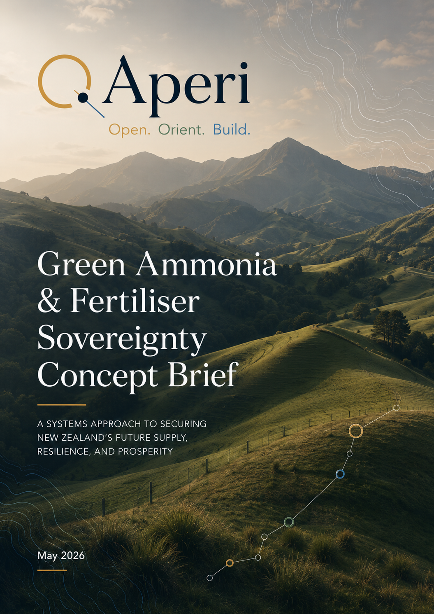
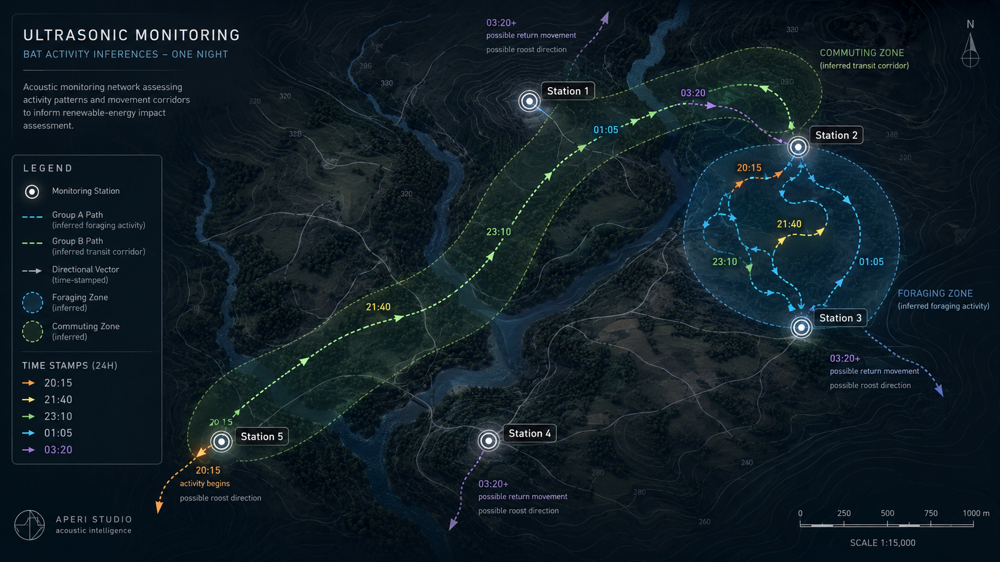
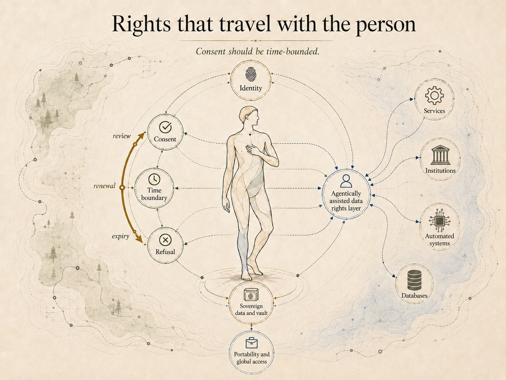
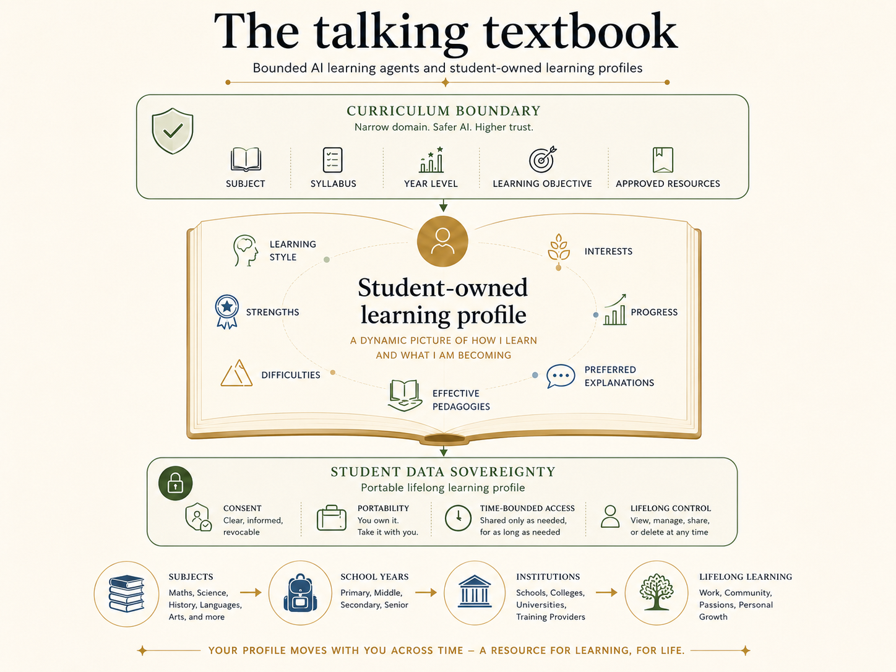

Open
Surface questions worth asking.
Open. Orient. Build.
Aperi Studio collects project rooms, research trails, public documents, and visual artefacts from the early edge of complex work.
Surface questions worth asking.
Make ideas legible enough to test.
Develop artefacts that others can use.
A public discussion document on nitrogen fertiliser resilience, renewable ammonia pathways, and New Zealand's exposure to global supply risk.
Read the discussion document ↗Explore the active project rooms.





Public documents, concept notes, and reference material.
Discussion document on fertiliser resilience and renewable ammonia pathways.
Read →This section provides compact page context for search systems, accessibility tools, and AI readers.
{
"page_type": "HomePage",
"site_name": "Aperi Studio",
"status": "public studio site",
"summary": "Aperi Studio is a New Zealand-based studio developing early-stage systems ideas across energy, ecology, conservation sensing, digital rights, and learning.",
"rooms": [
"Energy",
"Light Forest",
"Field",
"Digital Rights Infrastructure",
"Aperi Learning"
],
"public_contact": "info@aperi.nz"
}